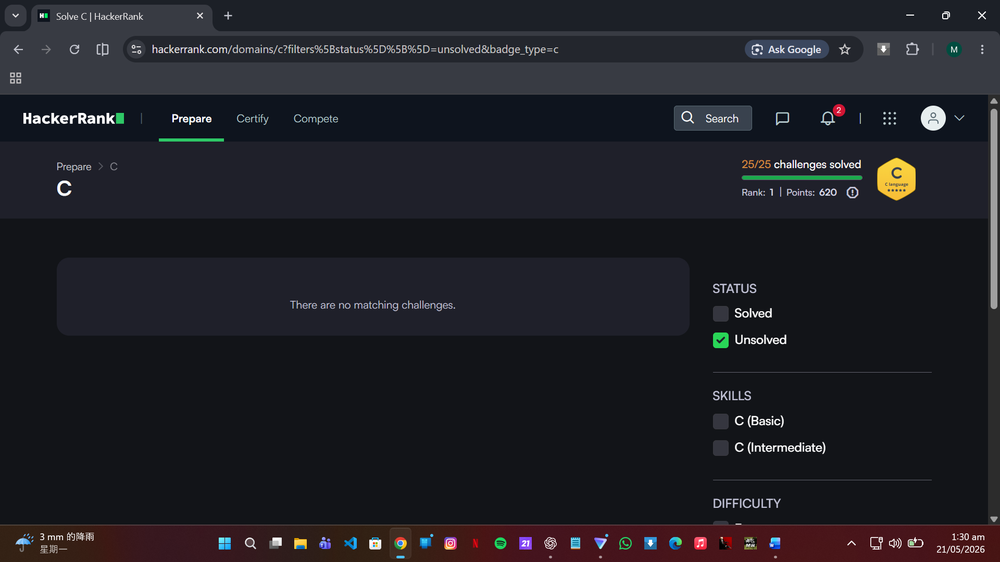
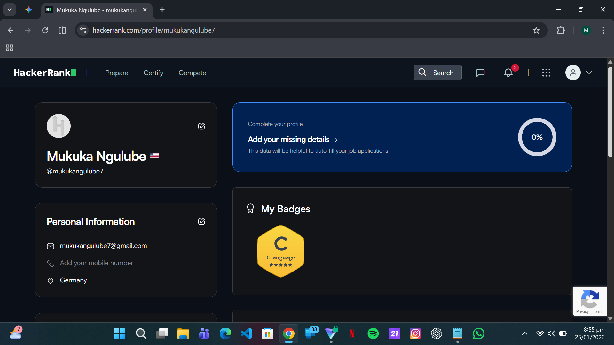
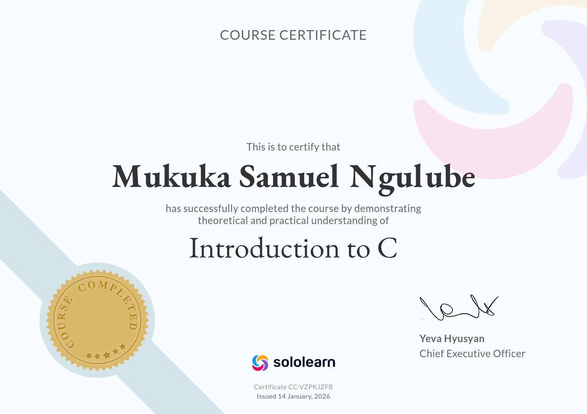

This comprehensive page documents my technical progress, code problem-solving metrics, and academic accomplishments within the C programming language domain completed during the previous semester.


Participating in competitive problem-solving platforms like HackerRank has been an essential pillar of my technical evolution in low-level foundational paradigms. When I first approached the C programming language module, I quickly realized that understanding syntax rule maps by itself was completely insufficient for true development mastery. To bridge this structural gap, I systematically worked through the entire specialized C problem track provided on the platform, challenging myself to write optimized code architectures under rigid processing time-limit parameters. The algorithmic puzzles forced me to move completely away from brute-force thinking patterns and focus on designing highly efficient computational logic loops, clean data parsing routines, and deterministic runtime outputs.
One of the primary technical breakthroughs I experienced while working through the platform challenges was mastering memory space allocations via pointer manipulation. In high-level languages, memory cleanup and reference layers are completely hidden from the developer, but the C language demands that programmers manually oversee every allocated byte. On HackerRank, exercises focusing on variable pointer chains, custom structures, dynamic array generation, and multi-dimensional grid traversals forced me to build a concrete cognitive layout of hardware memory stacks. I learned to track pointers meticulously, prevent runtime leaks by executing proper memory free cycles, and avoid system segmentation faults by verifying array boundaries before execution loops. This persistent debugging loop built a deep baseline of engineering intuition that changes how I organize programmatic architecture.
Furthermore, solving problems on the platform dramatically enhanced my deep understanding of file system controls, bitwise operations, and complex custom data handling structures. Working through linked lists, binary tree configurations, and custom data processing structures helped me see exactly how raw data organizes within modern system memories. Achieving my custom profile badges and clearing official certifications served as objective validation of my capacity to write maintainable code under pressure. This rigorous trial layout completely altered my general programming philosophy, demonstrating that systematic debugging, careful edge-case testing, and code execution tracking are essential habits for any software engineer aiming to write highly secure and scalable computing solutions.

While platform challenges built up my logical execution stamina, my secondary tracking modules on SoloLearn provided a highly structured approach to conceptual theory rules. The micro-learning modular architecture allowed me to steadily break down advanced C language frameworks into foundational building components. I spent extensive time parsing through standard variable declarations, storage classifications, scope control layers, and macro function definitions. Reviewing code blocks through interactive module quizzes regularly highlighted the subtle runtime nuances of the language, such as prefix versus postfix operators, type coercion behaviors, and structural padding within customized memory models. This conceptual work ensured that my practical programming choices were backed by a solid theoretical base.
A major focus area during my interactive modules was tracking the deep behavior of structured storage blocks and custom structural definitions. I spent multiple learning blocks exploring how structural elements group primitive parameters, how memory layouts align custom types, and how union variables optimize local memory limits by allowing overlapping data layouts. Working through these modules gave me a clear perspective on hardware-efficient code design. I ran multiple structural logic paths to master standard libraries, including standard input-output utilities, string formatting expressions, and math functions. This foundational work demystified how compilation engines process functional structures and map operational directions directly onto hardware execution tracks.
Additionally, the competitive peer review modules on the platform exposed me to a diverse range of formatting layouts and refactoring strategies from around the world. Analyzing foreign code fragments helped me build a critical eye for structural readability, documentation habits, and clean design patterns. Earning my final completion certification represents a personal commitment to continuous self-improvement and technical fluency. This dual-track learning configuration perfectly balanced interactive problem testing with structured conceptual theory rules, giving me a well-rounded foundation in the C language that will help me smoothly adapt to any future programming frameworks or professional development tasks.
Reflecting back on this intensive learning period, transitioning between the deterministic logic of C programming and the highly visual, asynchronous design environment of front-end web development has given me a deep appreciation for the software development stack. Mastering memory spaces and logical flows in C taught me to value efficiency, clean data structures, and optimal performance. Meanwhile, designing responsive web layouts showed me how to make technical code accessible and user-friendly for real-world audiences. This balance between back-end processing logic and client-side presentation styling has shaped me into a well-rounded programmer, ready to build elegant, high-performance solutions across modern digital systems.